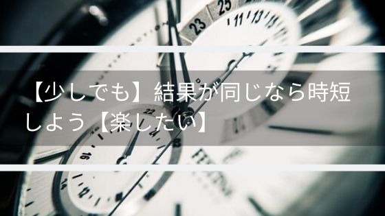

【少しでも】結果が同じなら時短しよう【楽したい】
楽する鍵は調査と経験
私は面倒なことが嫌いなので、いかに楽できるかを考えるのが好きです。
面倒なことを効率化できた時は達成感があります。
そのため時短グッズやアイテムは見かけたらどんどん試したくなります。
今回は時短について書いて書いていきたいと思います。
楽をするため人や物に自分の作業をやって貰うやり方
楽をするために苦労をしたほうがいい話を以前にしました。

要約すると最終的に楽になることを一番に考えて、
「目の前の楽だけを考えるのではなく苦労もしよう」
「苦労といっても構える必要はなく、やるべき物事に意識を向けて経験を積もう。」
といった内容です。
カレーを食べるのが目的の場合、選択肢はいくつかあります。
「材料を買い作って食べる」
「レトルトカレーを買い作って食べる」
「出来たカレーを買って食べる」
「カレーを外で食べる」
「カレーを配達してもらい食べる」
前提としてカレーの味はすべて同じだとします。外で食べたお店がおしゃれだとか言う付加価値は除外してのお話です。
下のほうに行くほど手間がかからず楽なのが想像できます。
何故楽なのかを考えますと、下に行くほど時短している部分はほかの人にやって貰っているということがわかります。
どういうことなのか具体的に見ていきます。
「材料を買い作って食べる」は「買いに行くこと」「作ること」を全部自分でやっています。
「レトルトカレーを買い作って食べる」は「作ること」の一部をやって貰っています。
「出来たカレーを買って食べる」は「作ること」の全部をやって貰っています。
「カレーを外で食べる」も「作ること」全部をやって貰っています。
「カレーを配達してもらい食べる」は「買いに行くこと」「作ること」を全部やって貰っています。
楽をしたい、時短したいと思ったら、
サービスを受ける ＞ 楽をするには物（グッズやアイテム）を使う ＞ 全部自分でやる
ということになります。
この世の中には楽するための便利グッズやサービスが多く存在します。
どれが良い、どれが悪い、わからないものも多いです。
自分でやるより良い結果か同じ結果でなければ時短する意味がありません。
そのためには苦労して調べて経験してみて最終的に楽になればよいのです。
調べる手助けとしてこのサイト「気まぐれチェック」では、使った時短グッズのレビューや楽できるサービスを紹介しているので気になった方は見ていってください。
家事の便利グッズまとめ